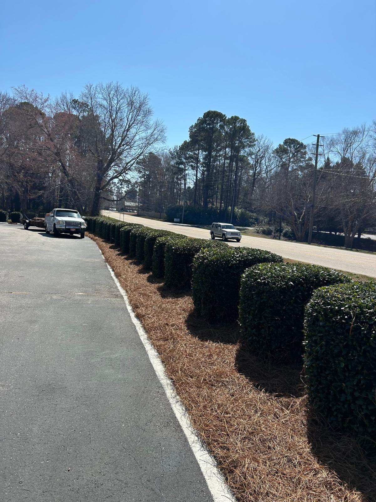
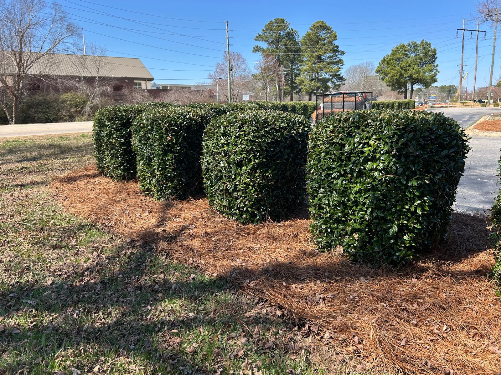
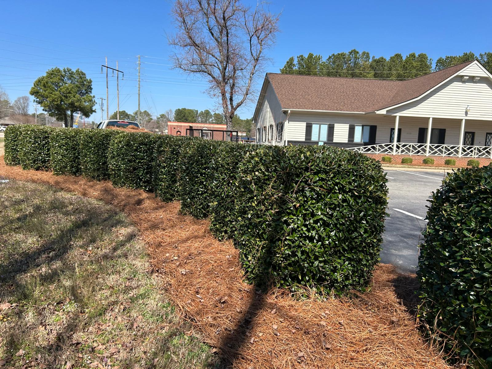
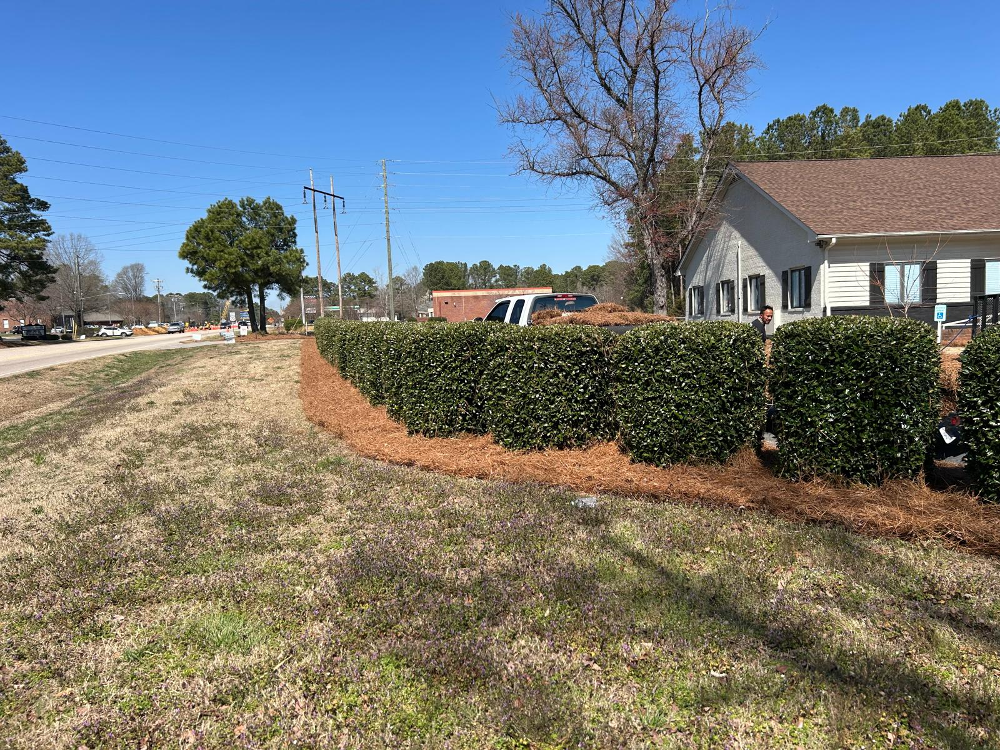
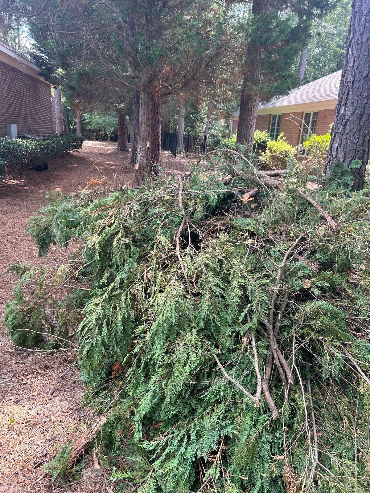
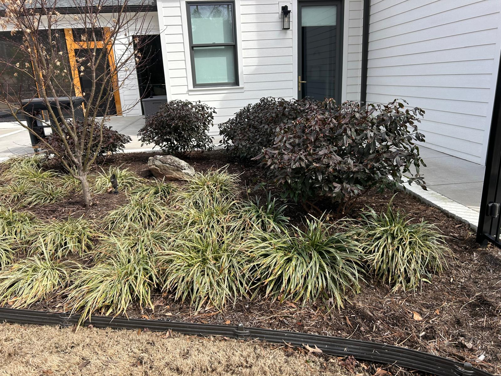
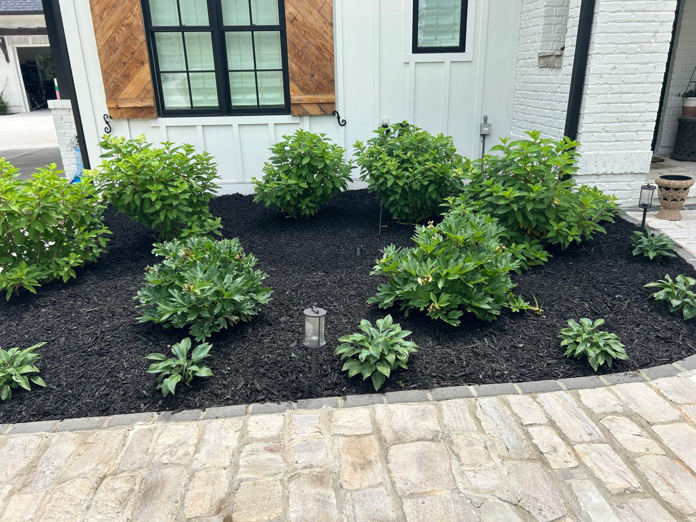
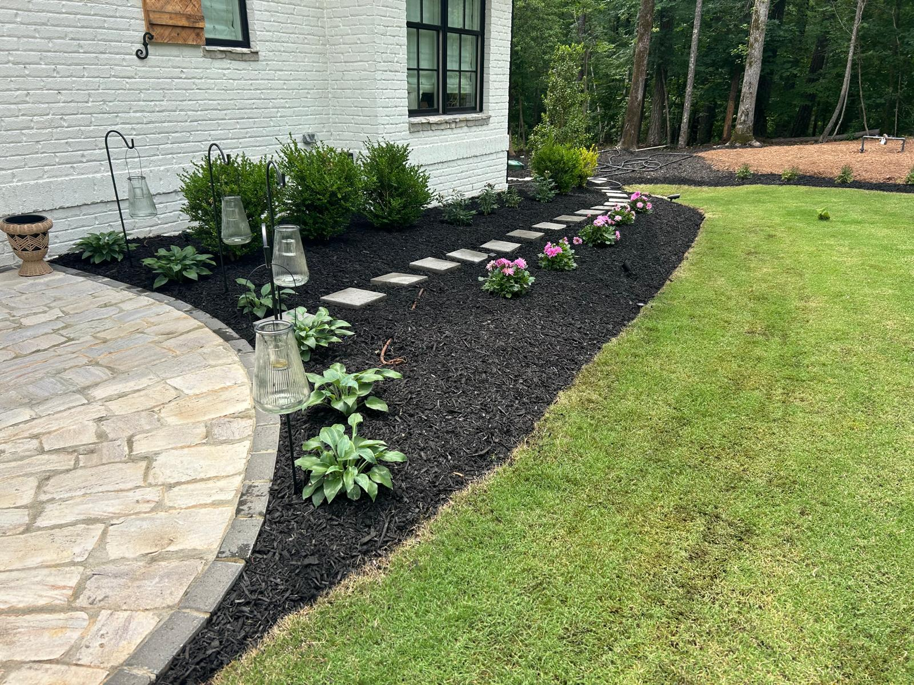

Our Services
Tree Services
Professional tree trimming, removal, and stump work to keep your property safe, clean, and well-maintained.
What We Offer
Safe, Reliable Tree Work That Protects Your Property
Our tree services are focused on maintaining the safety, structure, and appearance of your outdoor space. Overgrown or damaged trees can become a risk, and proper care helps prevent issues while keeping your property looking clean and organized.
Whether you need trimming, removal, or stump work, we provide dependable service with attention to detail, ensuring your yard stays safe and professionally maintained.
Included in this service
- Tree trimming and shaping
- Tree removal for safety and space
- Stump grinding and cleanup
- Professional and detail-focused outdoor work
Gallery
Recent Tree Work
Tree services completed with care, precision, and a focus on safety and clean results.








Need a Quote?
Let’s Take Care of Your Trees
Call today to get a straightforward quote for tree services and safe, reliable outdoor work.
Call Now